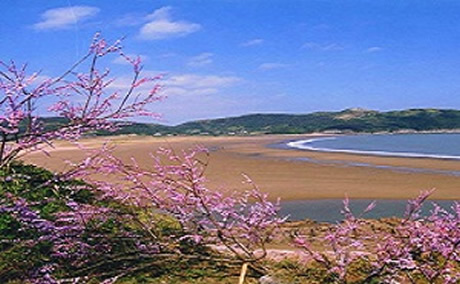

舟山特色旅游

“海天佛国”普陀山:
普陀山位于杭州湾以东，与上海、宁波隔海相望，是中国佛教四大名山之一、国务院首批公布的国家级重点风景名胜区,AAAA级国家旅游区，全国文明山、卫生山，浙江省唯一的ISO14000国家示范区，素有“海天佛国”、“南海圣境”之...
“碧海金沙”朱家尖:
朱家尖是舟山群岛一千多个岛屿中的第五大海岛，岛屿西部与著名渔港沈家门一脉相连，通过一座跨海大桥与舟山本岛紧密连接；海岛北面与“海天佛国”普陀山隔海相望，相距1.35海里，乘快艇10分钟可达。朱家尖以沙石自然景观著...
“渔港海鲜”沈家门:
“中国渔都”沈家门是舟山市普陀区政府所在地。沈家门渔港与挪威卑尔根港，秘鲁卡亚俄港并称为世界三大群众性渔港，是中国最大的渔货集散地。这里有国内最大的水产品批发市场，鱼虾螺蟹，洋洋大观，海鱼产销量为全国之最。
“桃花传奇”桃花岛:
桃花岛是金庸先生所著《射雕英雄传》和姐妹篇《神雕侠侣》所描绘的美妙神奇东海小岛。岛上的风景旅游资源丰富多样，门类齐全，品位较高，集海、山、石、礁、岩、洞、寺、庙、庵、花、林、鸟、军事遗迹、历史纪念地、摩崖石刻、...
“列岛风光”嵊泗:
嵊泗列岛是我国唯一的国家级列岛风景名胜区，位于舟山群岛北部，西距上海芦潮港仅17海里，每岛各具特色，各有神韵，犹如一盆盆细微而精巧的盆景，飘忽于雾里浪尖。
嵊泗列岛，位于舟山群岛北部，长江口和杭州湾汇合处...?
“蓬莱仙岛”岱山:
岱山为省级风景名胜区，又称“蓬莱仙岛”，因秦始皇遣方士徐福率数千童男童女上岛寻找长生不老之药而得名。 岱山古称蓬莱仙岛，历史悠久，风光秀美。清时，刘梦兰、陈文份等文人墨客曾在岛上尽兴漫游，唱和题咏，形成...??
“古城要塞”定海:
"群岛之首"的定海文化历史悠久,现是舟山市政府所在地,是舟山的政治、经济、文化中心，是全国唯一的海岛历史文化名城。辖区内名胜古迹，历史文物众多，旅游资源丰富，现存有“海岛河姆渡”文化之称白泉十字路和马岙土墩等古文化...
“群岛之城”新城:
新城，地处定海与沈家门之间，是舟山市政治、文化、教育和服务中心，现代化的海岛生态新城。新城拥有4.5千米的城市生活岸线，将建成200米宽的滨海休闲景观带。城区分为文教区、海洋文化公园、体育中心和居住区。通过新城大桥...
“东极之光”东极:
东极，又名中街山列岛，系我国东部领海最边远的岛屿，毗邻公海。由28个大小岛屿和108块礁石组成。东极的海漂亮至极，碧澄的海水中石斑鱼、、虎头鱼、鲈鱼等海洋鱼类随处可见；礁岩上闻名的舟山辣螺、马蹄螺、观音手...
“东方大港”港桥新区:
舟山多深水良港，如鲲之背，如鹏之翼，岸线曲折，绵延百里。内连富饶的长江三角洲，外接繁忙的国际航线，区位优越，得天独厚。世纪伊始，风云初展，击水三千，扶摇九万，正当其时！